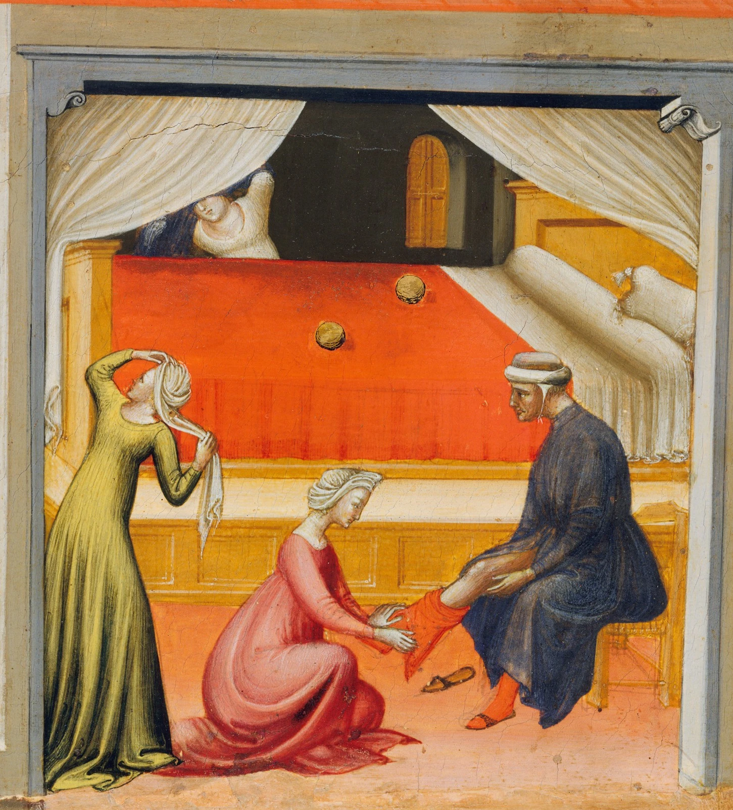
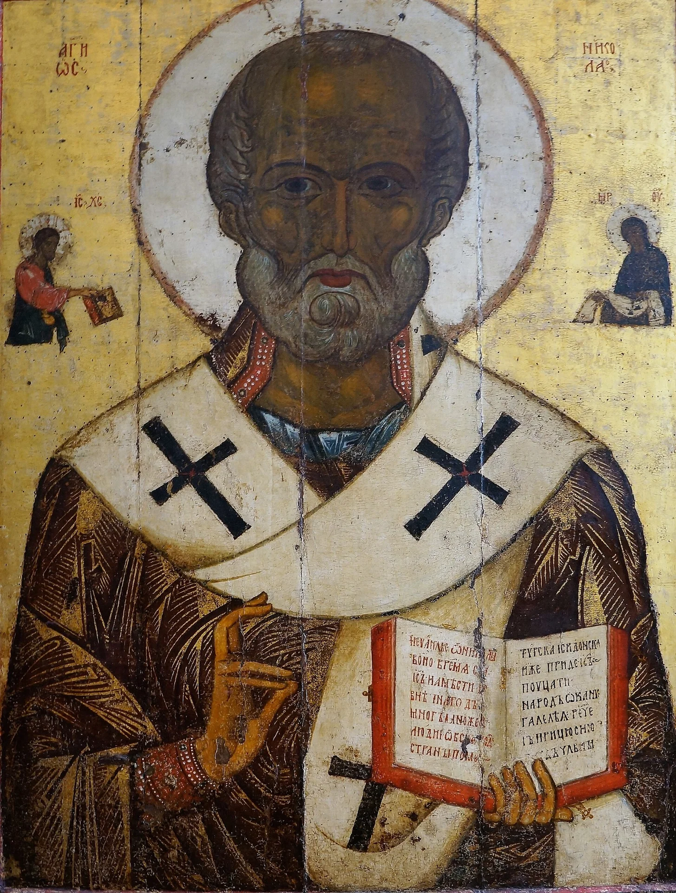
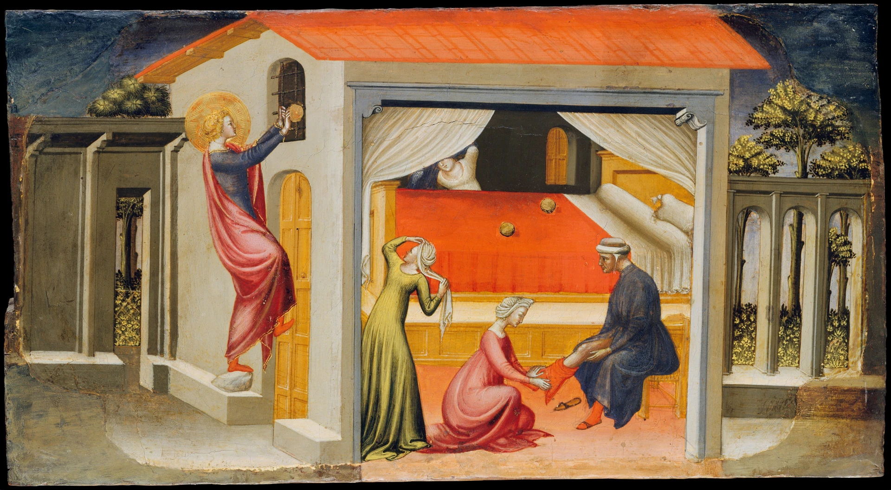
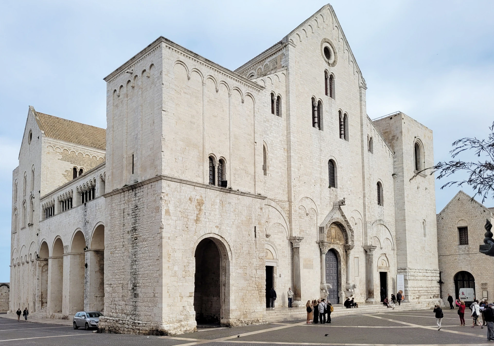

아직 펼치지 않은 카드성탄을 기다리는 날들 · 2성 니콜라오산타클로스가 되기 전, 그는 누구였을까요?산타 할아버지 이야기는 이 사람에게서 시작됐대. 누구일까?
4세기 · 1087년미라(오늘의 튀르키예 뎀레) · 이탈리아 바리
성 니콜라오
4세기, 지금의 튀르키예 땅 미라에 니콜라오(영어로는 니콜라스)라는 주교가 있었어요. 몇백 년 뒤 적힌 그의 전기에는, 밤에 가난한 집 창문으로 금 주머니를 던져 넣은 이야기가 나와요. 어두운 그 방을 등불로 비춰, 몰래 다녀간 사람을 찾아보세요.
아주 옛날, 깜깜한 밤에 가난한 집 창문으로 금 주머니를 몰래 던져 준 사람이 있었대. 불빛으로 비춰서 찾아볼까?
검수 전 시안이에요(기준서 1판). 니콜라오의 선물 이야기는 그가 세상을 떠나고 몇백 년 뒤에 처음 적힌 전해지는 이야기라고 밝혔어요. 상상은 ‘눈 감고 상상해 보기’에만 썼어요.
시안 확인용카드 단계 미리 보기
1
미라의 주교
니콜라오는 4세기 리키아 지방의 항구 도시 미라의 주교(한 지역의 교회들을 맡아 돌보는 성직자)였어요. 미라는 지금 튀르키예 남쪽 바닷가의 뎀레예요.
오늘 전해지는 그의 이야기는 대부분 그가 세상을 떠나고 몇백 년 뒤에 적혔어요. 지금 남은 가장 오래된 전기는 수도원장 미카엘이 쓴 『니콜라오의 생애』예요. 미카엘은 더 옛날의 글과 사람들 사이에 전해 오던 이야기를 모아 썼다고 해요.
하얀 수염 할아버지는 아주 옛날 바닷가 도시의 주교였대.
물어보기아주 오래된 이야기는 어떻게 지금까지 전해졌을까?
2
세 번째 밤
미카엘의 전기에 이런 이야기가 있어요. 이웃의 한 사람이 큰 부자였다가 가난해져, 세 딸을 지킬 수 없는 처지가 되었어요. 딸들을 시집보낼 지참금(신부 집에서 마련하는 재물)이 없었거든요.
니콜라오는 밤에 그 집 창문으로 금 주머니를 던져 넣고, 얼굴을 보이지 않은 채 서둘러 돌아갔어요. 아버지는 새벽에 그 금을 찾아 맏딸을 시집보냈어요. 얼마 뒤 같은 창문으로 두 번째 주머니가 들어왔고, 둘째 딸도 시집을 갔어요.
아버지는 그다음 밤부터 잠들지 않고 기다렸어요. 누가 이 금을 주었는지 알고 싶었거든요.
어두운 밤이에요. 손가락이나 마우스로 문질러 등불로 비춰 보세요.

비치 디 로렌초, 「지참금을 주는 성 니콜라오」, 1433~35년, 뉴욕 메트로폴리탄 미술관 · 그림: 비치 디 로렌초 · 퍼블릭 도메인 · 위키미디어 공용(메트로폴리탄 미술관)
빛이 닿으면 숨은 표시가 나타나요.
세 번째 밤, 금 주머니가 떨어지는 소리가 나자 아버지는 뛰어나가 니콜라오를 따라잡았어요. 그 발아래 엎드려 고마워하자, 니콜라오는 그를 일으켜 세우고 이 일을 아무에게도 말하지 않겠다는 약속을 받았어요.
그림은 1433~35년 피렌체의 화가 비치 디 로렌초가 그렸어요. 화가는 세 밤의 이야기를 한 장면에 모아, 금 주머니를 둥근 금빛 공으로 그렸어요.
깜깜한 밤, 누가 창문으로 금 주머니를 던졌어! 불빛으로 비춰서 찾아볼까?
물어보기왜 얼굴을 보이지 않고 몰래 주었을까?
3
미라에서 바리로
니콜라오가 묻힌 곳 가까이에 교회가 세워졌다고 전해져요. 오랜 세월 둘레 땅이 높아져서, 지금은 옛 교회를 위에서 내려다봐요.
1087년 봄, 안티오키아에서 돌아오던 이탈리아 바리의 배 세 척이 미라에 들렀어요. 수도자들이 말렸지만, 선원들은 무덤을 열고 그의 뼈를 배에 싣고 떠났어요. 5월 9일 배가 바리에 닿자, 사람들이 항구로 몰려나와 맞았어요.


선원들은 그를 위해 큰 성당을 짓겠다고 다짐했어요. 1089년 10월, 교황 우르바노 2세가 새 성당 지하 경당(작은 예배실)의 제단 아래에 그의 뼈를 모셨어요. 바리는 지금도 해마다 5월 7~9일에 이 일을 기념해요.
아주 옛날 이탈리아 사람들이 배를 타고 와서 니콜라오의 뼈를 바다 건너로 모셔 갔대.
물어보기사람들은 왜 그렇게 멀리까지 모셔 가고 싶었을까?
4
12월 5일 밤의 장화
밤에 몰래 다녀간 선물 이야기는 유럽 곳곳의 풍습이 되었어요. 독일에서는 니콜라오 축일(교회가 그를 기리는 날, 12월 6일) 전날인 12월 5일 저녁, 아이들이 장화나 신발을 문밖에 내놓아요. 장화 대신 접시를 내놓는 지방도 있어요.
6일 아침이면 그 안에 귤이나 견과, 초콜릿 같은 작은 선물이 들어 있어요.

12월 5일 밤, 우리 집이라면 문밖에 무엇을 내놓을까요?
12월 5일 밤에 장화를 문밖에 두면, 아침에 귤이랑 초콜릿이 들어 있대!
물어보기너라면 누구의 장화에 무엇을 몰래 넣어 주고 싶어?
눈 감고 상상해 보기
추운 밤, 골목은 조용해요. 창살 사이로 묵직한 것이 툭 떨어지는 소리. 방 안에서 누군가 벌떡 일어나요. 문을 열고 달려 나가자, 어둠 속에서 한 사람이 걸음을 멈춰요. 숨이 하얗게 피어올라요.
눈을 감아 봐. 깜깜한 밤, 툭! 창문으로 무언가 떨어졌어. 아빠가 문을 열고 뛰어나가. 누구일까?
나의 자리
누가 알아주지 않아도 건넨 선물이 있나요? 이름 모를 누군가에게 받은 선물은요?
몰래 누군가를 기쁘게 해 줄 수 있다면, 누구에게 무엇을 주고 싶어?
마음에 닿는 한 줄을 고르거나 직접 써 보세요. 한 줄을 남기면 이 자리의 도장이 찍혀요. 이 기기에만 저장돼요.
더 깊이
이야기를 보다 궁금해질 만한 것들이에요. 답을 읽거나 짧은 영화로 보세요.
남의 무덤을 열고 뼈를 가져갔어요. 도둑질 아니에요?
니콜라오는 어떻게 산타클로스가 됐어요?
뒷이야기
아직 펼치지 않은 이야기예요. 누르면 이야기가 펼쳐지고 색이 돌아와요. 더 알고 싶으면 근거를 따라가 보세요.
다 펼치면, 다음에 오실 때 새 이야기가 찾아와요.
오늘의 뒷이야기는 여기까지예요. 다음에 오시면 새 이야기가 기다리고 있어요.
펼친 뒷이야기 · 누르면 다시 볼 수 있어요
더 찾아보기
기록마다 다른 점
전기를 쓴 때 미카엘의 전기를 8세기 초(710~720년 무렵)에 쓴 것으로 보는 자료도 있고, 9세기 전반(814~842년)으로 보는 자료도 있어요.
금 주머니와 금빛 공 기록에는 ‘금 주머니’라고 적혀 있어요. 이 그림과 젠틸레 다 파브리아노의 그림은 둘 다 둥근 금빛 공으로 그렸어요.
첫 무덤은 어디? 2024년 12월, 뎀레의 성 니콜라오 교회 남쪽 마당 곁 건물에서 길이 2미터쯤 되는 돌관이 나왔어요. 발굴단은 이곳이 그의 무덤 자리일 가능성이 커졌다고 보지만, 아직 단정하기는 이르다고 했어요.
세 딸의 앞날 성 니콜라오 센터는 세 딸이 종으로 팔려 갈 처지였다고 전해요. 가장 오래된 미카엘의 전기와 런던 내셔널 갤러리는, 가난한 아버지가 딸들을 몸 파는 일로 내몰려 했다고 적어요. 이 카드의 본문은 이것을 ‘지킬 수 없는 처지’라고 옮겼어요.
그는 몇 살에? 1950년대에 뼈를 조사한 마르티노 교수는 일흔이 넘은 남자의 뼈로 보았고, 2004년의 얼굴 복원은 예순 살쯤으로 그렸어요.
‘산타클로스’라는 이름 히스토리 채널 누리집은 네덜란드 이름 ‘신터클라스’에서 왔다고 적어요. 성 니콜라오 센터는 독일 말 ‘장크트 니클라우스’가 자연스럽게 바뀐 것으로 봐요. 뉴욕의 네덜란드 사람들이 이 풍습을 가져왔다는 이야기도 성 니콜라오 센터는 근거가 적다고 해요.
산타의 빨간 옷 히스토리 채널 누리집은 화가 토머스 내스트가 산타에게 흰 털을 단 빨간 옷을 입혔다고 적어요. 성 니콜라오 센터는 1931년부터 나온 코카콜라 광고가 빨간 옷의 산타를 굳혔지만, 그보다 앞서 빨간 옷으로 그린 화가도 많았다고 적어요.
함께 읽는 말씀
말씀은 뜻만 옮기고, 본문은 대한성서공회 개역개정으로 이어 드려요.
마태복음 6장 3~4절 남을 도울 때에는 오른손이 하는 일을 왼손이 모르게, 숨어서 하라는 예수의 말씀이에요.
등불로 찾기 금박
어두운 방의 다섯 곳을 모두 비춰 찾으면 카드에 금박이 입혀져요.
어두운 방의 다섯 곳을 모두 비춰 찾기
12월 5일 밤 채색
둘 가운데 하나만 해도 카드가 채색돼요.
우리 집이라면 12월 5일 밤 문밖에 무엇을 내놓을지 고르기
아이와 함께 ‘영화처럼 보기’를 끝까지 보기
근거 보기 (21)
- St Nicholas Center: 미카엘의 『니콜라오의 생애』 영어 번역 — 가장 오래된 전기, 3·9장 부모와 유산, 10~17장 세 번의 밤·가난해진 아버지·몰래 준 까닭(부끄러움에서 건지고 선행을 떠벌리지 않음)·아버지가 알아봄·비밀 약속, 18장 주교가 되기 전, 쓴 때(8세기 초)
- St Nicholas Center: 성 니콜라오는 누구인가 — 지참금과 종으로 팔려 갈 처지, 양말이나 신발에 떨어진 금, 부모와 유산, 343년 12월 6일, 뱃사람과 아이들의 수호성인, 바리의 순례지
- St Nicholas Center: 바리의 성인 — 셀주크와 순례길 걱정, 복과 이름과 장사의 이득, 1087년 안티오키아에서 돌아오던 배 세 척, 수도자들의 만류, 쇠막대로 연 무덤, 5월 9일 도착, 성당을 짓겠다는 다짐, 1089년 지하 경당, 5월 7~9일 축제와 만나
- Finestre sull’Arte: 바리와 풀리아의 성 니콜라오 — 62명의 선원, 배 세 척, 1087년 5월 9일 일요일, 엘리아 수도원장, 1089년 10월 우르바노 2세
- 브리태니커 백과사전: 성 니콜라오 — 1087년 이탈리아 선원이나 상인들이 훔쳐 감, 손꼽히게 붐빈 순례지, 아이·뱃사람·전당포의 수호성인
- 성 니콜라오 센터: 산타클로스는 어떻게 생겼나 — 뉴욕의 네덜란드 전통은 근거가 적음, 1821년 『아이들의 친구』의 성탄 전야와 순록 썰매, 1823년의 시, 내스트, 1931년 코카콜라 광고 이전의 빨간 옷, 이름은 독일 말에서
- 히스토리 채널 누리집: 산타클로스 — 이름은 네덜란드 ‘신터클라스’에서, 1823년(1822년에 씀) 시의 여덟 마리 순록과 굴뚝 곁 양말, 내스트의 빨간 옷
- 브리태니커 백과사전: 산타클로스 — 네덜란드 사람들이 뉴암스테르담에 가져왔다고 여겨짐, 1823년 처음 나온 시, 내스트, 1931년부터 코카콜라 광고
- 메트로폴리탄 미술관: 비치 디 로렌초 「지참금을 주는 성 니콜라오」 — 1433~35년, 피렌체의 한 수도원 제단화 아랫단(프레델라), 젠틸레 다 파브리아노 본보기, 짝 그림 「세 젊은이를 되살리는 성 니콜라오」, 퍼블릭 도메인
- 내셔널 갤러리(런던): 금 공 셋과 NG6606 — 화가들이 금 주머니를 금빛 공으로 그림, 니콜라오의 표지, 지참금
- 성 니콜라오 센터: 사람들 · 상징들 — 전당포의 금 공 셋, 오렌지나 사과가 금을 나타냄, 통 속의 아이들
- 성 니콜라오 센터: 진짜 얼굴 · 바리 유해의 해부학 조사 — 1953·1957년 마르티노, 2004년 윌킨슨, 부러진 코, 키 1.67미터
- 성 니콜라오 센터: 성 니콜라오의 만나(바리 대성당의 글) — 1925년 분석, 5월 9일 저녁
- 성 니콜라오 센터: 성 니콜라오는 베네치아에도 있을까 — 1099년 베네치아 배들, 1992년 500조각
- ICONARP 학술지(2024): 성 니콜라오 기념 박물관 복원 — 13세기 후반 미로스강의 홍수와 6미터의 흙
- 슈투트가르터 차이퉁: 왜 니콜라오에게 장화를 내놓을까 — 미라의 니콜라오, 몰래 신발에 넣은 금, 채워 줄 그릇, 깨끗한 장화, 12월 5일 저녁, 접시를 내놓는 지방, 6일 아침 귤·견과·초콜릿
- 독일 성탄 박물관: 동행자(크네히트 루프레히트) · 성 니콜라오 센터 — 회초리와 자루, 장난감과 석탄
- 성 니콜라오 센터 · 서울신문(2007) · 한국학중앙연구원 위키 — 서울의 성 니콜라스 정교회 대성당과 대한성공회 서울주교좌성당
- Daily Sabah(아나돌루 통신), 2024.12.6: 뎀레 성 니콜라오 교회 발굴과 돌관 — 1989년부터 발굴, 아직 단정 이름
- 위키미디어 공용: 뎀레 성 니콜라오 교회 사진 설명 — 땅이 높아져 둘레에서 내려다봄
- 대한성서공회 개역개정: 마태복음 6장
그림·사진·소리 출처
- 그림: 비치 디 로렌초 · 퍼블릭 도메인 · 위키미디어 공용(메트로폴리탄 미술관)
- 사진: Dosseman · CC BY-SA 4.0 · 위키미디어 공용
- 사진: Bernard Gagnon · 퍼블릭 도메인 · 위키미디어 공용
- 사진: HerzenSterneBrezeln · CC BY-SA 4.0 · 위키미디어 공용
- 그림: 비치 디 로렌초 · 퍼블릭 도메인 · 위키미디어 공용(메트로폴리탄 미술관) · 일부 잘라 씀
- 그림: 비치 디 로렌초 · 퍼블릭 도메인 · 위키미디어 공용(메트로폴리탄 미술관) · 일부 잘라 씀
- 그림: 비치 디 로렌초 · 퍼블릭 도메인 · 위키미디어 공용(메트로폴리탄 미술관) · 일부 잘라 씀
- 그림: 비치 디 로렌초 · 퍼블릭 도메인 · 위키미디어 공용(메트로폴리탄 미술관) · 일부 잘라 씀
- 사진: Dosseman · CC BY-SA 4.0 · 위키미디어 공용 · 일부 잘라 씀
- 이콘 사진: Pierre André Leclercq · 퍼블릭 도메인 · 위키미디어 공용 · 일부 잘라 씀
- 이콘 사진: Pierre André Leclercq · 퍼블릭 도메인 · 위키미디어 공용
‘처음 만나는 기독교 문화’의 깊은 카드예요. 실제 인물의 사진은 쓰지 않았어요. 카드 단계와 남긴 글은 이 기기에만 저장돼요.